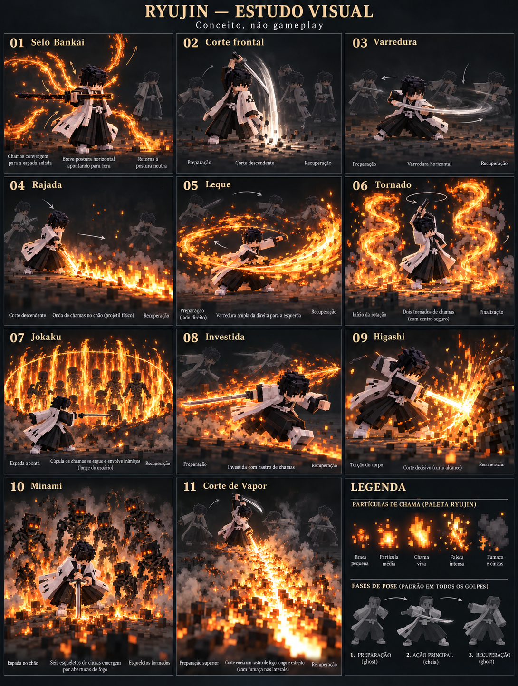
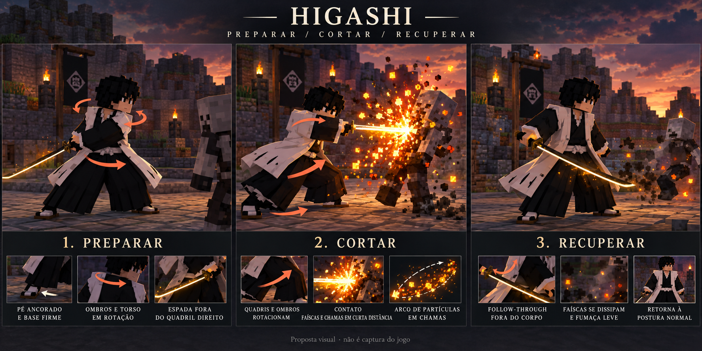

11 estudos: transformação e dez ataques. Animação procedural de movimento, fora do Minecraft. As imagens conceituais mostram a direção artística; os GIFs mostram a sequência. Nenhuma alteração aplicada ao mod.

